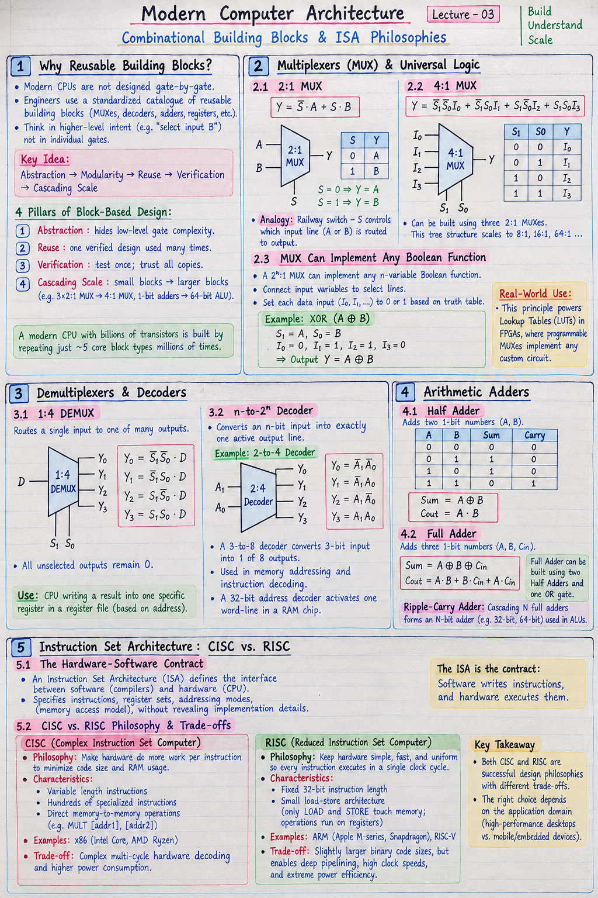

Short Notes & Visual Summary
Handwritten / quick summary notes for Lecture 03:

Click image to open high-resolution version in new tab
Overview
1.1 General info
Lecture: 0011 Combinational Building Blocks CSA222: Modern Computer Architecture Two Philosophies for a CPU's Language The instruction set is the contract between hardware and software — and there are two great ways to write it.
L03 · MODERN COMPUTER ARCHITECTURE 02 / 34
2.1 General info
Where We Left Off From single gates to reusable blocks — L1 & L2 gave us the raw materials. & Gates & truth tables AND, OR, NOT, XOR — and how any behaviour becomes a truth table
Σ
3.1 General info
SOP / POS forms Any truth table → a Boolean expression we can build in hardware
(L2).
4.1 General info
▦ K-map minimisation Fewest gates for a given function — area, power, delay all matter (L2). ⊼ NAND is universal One gate builds everything. Today we build USEFUL things from gates. Today: stop thinking in individual gates. Start thinking in blocks you reuse everywhere.
L03 · MODERN COMPUTER ARCHITECTURE 03 / 34
5.1 General info
Today's Roadmap Four building blocks — then we snap them together into a CPU's core. 1 Multiplexer/Selectors Multiplexers pick one of many inputs; demultiplexers route one input to many outputs. → 2 Decoders Turn an n-bit code into one active line out of 2ⁿ — the heart of addressing. → 3 Adders Half and full adders — the arithmetic every ALU is built on. Then — the payoff: we show exactly where MUXes, decoders, and adders live inside an ALU and a register file.
L03 · MODERN COMPUTER ARCHITECTURE 04 / 34
6.1 General info
Why Reusable Blocks? Nobody designs a CPU one gate at a time — they use a parts catalogue. ~5 core block types MUX, decoder, adder, register, and a few more — repeated millions of times — build an entire processor.
▣ ABSTRACTION
7.1 General info
Think 'select this input', not '17 gates wired thus'.
⟳ REUSE
8.1 General info
One verified MUX design, dropped in everywhere it's needed.
✓ VERIFICATION
9.1 General info
Test the block once; trust every copy of it.
⇗ SCALE
10.1 General info
Small blocks cascade into big ones — 2:1 MUX → 4:1 → 8:1.
05 / 34 1. Multiplexers A data selector: many inputs go in, a select code picks exactly one to come out.
CORE DEFINITION
11.1 General info
A Data Selector A multiplexer acts as a digital traffic controller for processing signals. Many inputs go in, but a dynamic select code picks exactly one to come out.
IN
12.1 General info
Many Inputs Multiple source channels arrive carrying unique parallel data streams.
SEL
13.1 General info
The Select Code Control signals act as the selector, dynamically determining the routing path.
OUT
14.1 General info
Exactly One Output Only the chosen input line is connected and successfully passes outward.
L03 · MODERN COMPUTER ARCHITECTURE 06 / 34
15.1 General info
The 2:1 Multiplexer One select line chooses between two inputs — the simplest selector. 2:1
THINK: RAILWAY SWITCH
16.1 General info
Two tracks (A, B) converge to one line (Y). The select signal S is the switch lever deciding which train passes through. Change S, and a completely different input flows out — instantly, no data is stored.
L03 · MODERN COMPUTER ARCHITECTURE 07 / 34
17.1 General info
Building a 2:1 MUX from Gates Y = S'·A + S·B — two ANDs, one NOT, one OR.
READING IT
18.1 General info
• The top AND passes A only when
S'=1 (i.e. S=0).
• The bottom AND passes B only when
S=1.
19.1 General info
• At any moment exactly one AND is
'open'; the OR merges them into Y.
L03 · MODERN COMPUTER ARCHITECTURE 08 / 34
20.1 General info
The 4:1 Multiplexer Two select lines address four inputs — 2 select bits choose 1 of 2² = 4. 4:1
Y = S1'S0'·I0 + S1'S0·I1 + S1S0'·I2 + S1S0·I3
21.1 General info
Each select combination = one minterm that gates exactly one input through.
L03 · MODERN COMPUTER ARCHITECTURE 09 / 34
22.1 General info
Cascading: Build Big MUXes from Small Ones A 4:1 MUX is just three 2:1 MUXes in a tree.
WHY IT MATTERS
23.1 General info
One small, verified block scales to any size. Need an 8:1? Two 4:1s feeding a 2:1. Need 16:1? Keep tree-ing. This 'compose small proven parts into big ones' is exactly how real chips — and good software — are built.
L03 · MODERN COMPUTER ARCHITECTURE 10 / 34
24.1 General info
A MUX Can Be Any Logic Function Wire the inputs to constants, and a 4:1 MUX implements ANY 2-variable function.
THE TRICK
25.1 General info
Feed the input variables into the SELECT lines. Then wire each data input Iₖ to the 0 or 1 that the truth table demands for that row. Example — implement XOR(A,B): S1=A, S0=B (selects)
WHY THIS IS A BIG DEAL
26.1 General info
A 2ⁿ:1 MUX implements ANY n-variable function — no minimisation needed. This is the principle behind the Lookup Tables (LUTs) inside every FPGA. An FPGA is, at its core, a sea of tiny MUX-based LUTs you reprogram by changing what the data inputs are wired to — which is why an FPGA can 'become' any circuit.
11 / 34 2. Demultiplexers & Decoders The reverse of a MUX — route one input to many outputs, or light up one line from a code.
L03 · MODERN COMPUTER ARCHITECTURE 12 / 34
27.1 General info
The Demultiplexer (DEMUX) One input, many outputs — the select code decides which output it reaches. 1:4
MUX RUN BACKWARDS
28.1 General info
A MUX has many inputs → one output. A DEMUX flips it: one input → many outputs. The select bits choose the single destination; all other outputs stay at 0.
REAL USE
29.1 General info
A single data line fanned out to one of many destinations — e.g. a CPU writing a result to one chosen register, or a network switch routing a packet to one output port.
L03 · MODERN COMPUTER ARCHITECTURE 12 / 34
30.1 General info
The Demultiplexer (DEMUX) One input, many outputs — the select code decides which output it reaches.
Original PDF Notes
Below is the original PDF document for your reference: